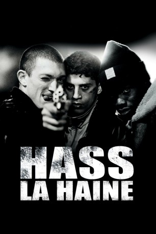

#6056 Hass
Alternativ: La Haine (Englischer Titel)
 
 IMDB-Wertung: 8.1 / 10
IMDB-Wertung: 8.1 / 10  IMDB-TOP-Platzierung: 229
IMDB-TOP-Platzierung: 229  Metascore: 0
Metascore: 0 
In den tristen Sozialbausiedlungen der Pariser Vororte brechen Unruhen aus, nachdem ein 16-jähriger Araber von der Polizei fast zu Tode geprügelt wurde. Nach einer Nacht voller Gewalt zwischen Jugendlichen und der Polizei herrscht Ausnahmezustand. Getrieben von Hass gegen das System stehen die Freunde Hubert, Said und Vinz an vorderster Front, an einem Tag, der ihr Leben verändern wird.
Jahr: 1995
Dauer: 97 Minuten
FSK: 12
Land: Frankreich Studio: Concorde-Castle Rock/TurnerTonspuren:
Untertitel:
Auflösung: 1080p (1920x1040) Größe: 8192 MB
Genre: Drama, Krimi
Regisseur:  Mathieu Kassovitz
Mathieu Kassovitz
Drehbuch: Manfred Wong
Soundtrack:
Darsteller:
 Vincent Cassel als Vinz
Vincent Cassel als Vinz Saïd Taghmaoui als Saïd
Saïd Taghmaoui als Saïd Benoît Magimel als Benoît
Benoît Magimel als Benoît Karin Viard als Gallerly Girl
Karin Viard als Gallerly Girl Vincent Lindon als Really Drunk Man
Vincent Lindon als Really Drunk Man Mathieu Kassovitz als Young Skinhead
Mathieu Kassovitz als Young Skinhead- Anthony Souter als Skin
 Philippe Nahon als Police Chief
Philippe Nahon als Police Chief Zinedine Soualem als Plainclothes Police Officer
Zinedine Soualem als Plainclothes Police Officer- Hubert Koundé als Hubert
- Abdel Ahmed Ghili als Abdel
- Solo als Santo
- Joseph Momo als Ordinary Guy
- Héloïse Rauth als Sarah
- Rywka Wajsbrot als Vinz's Grandmother
- Olga Abrego als Vinz's Aunt
- Laurent Labasse als Cook
- Choukri Gabteni als Saïd's Brother
- Nabil Ben Mhamed als Boy Blague
- Médard Niang als Médard
- Arash Mansour als Arash
- Abdel-Moulah Boujdouni als Young Businessman
- Mathilde Vitry als Journalist
- Christian Moro als CRS TV Journalist
- JiBi als Fat Youth
 Edouard Montoute als Darty
Edouard Montoute als Darty- Félicité Wouassi als Hubert's mother
- Fatou Thioune als Hubert's Sister
- Thang-Long als Grocer
- Cut Killer als DJ
- Sabrina Houicha als Saïd's Sister
- Sandor Weltmann als Vinz Lookalike
- François Levantal als Astérix
- Julie Mauduech als Gallery Girl
- Peter Kassovitz als Gallery Patron
- Christophe Rossignon als Taxi Driver
- Florent Lavandeira als Skin
- Teddy Marques als Skin
- Samir Khelif als Skin
- Tadek Lokcinski als Monsieur Toilettes
- Virginie Montel als SDF Metro
 Andrée Damant als Concierge
Andrée Damant als Concierge- Marcel Marondo als Bouncer
- Karim Belkhadra als Samir
- Marc Duret als Inspector Notre Dame
- Eric Pujol als Assistant Policeman
- Sébastien Tavel als Hospital police officer
- François Toumarkine als Hospital police officer
- José-Philippe Dalmat als Hospital Police Officer
- Bernie Bonvoisin als Plainclothes Police Officer
Datei: X:\1995\Hass (1995, FSK12, 1920x1040).mkv seit 25.04.2017
Festplatte: HD 1992-1995
 Es gibt insgesamt 85 Filme in der Gruppe '1995'
Es gibt insgesamt 85 Filme in der Gruppe '1995'